리눅스마스터-1급 (2020-10-10 기출문제)
1과목: 리눅스 실무의 이해
1. 다음 설명에 해당하는 라이선스로 알맞은 것은?
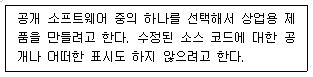
- GPL
- MPL
- BSD
- LGPL
(정답률: 68%)

2. 다음 중 나머지 셋과 다른 종류에 속하는 리눅스 배포판으로 알맞은 것은?
- Ubuntu
- Linux Mint
- Elementary OS
- Vector Linux
(정답률: 51%)
3. 다음 중 리눅스 기반 운영체제로 틀린 것은?
- Tizen
- webOS
- QNX
- GENIVI
(정답률: 51%)
4. 다음그림에 해당하는클러스터링기법으로 알맞은것은?
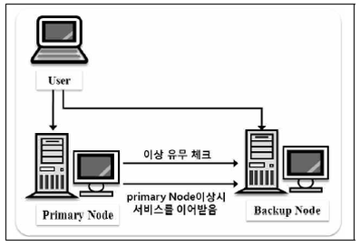
- 고계산용 클러스터
- 부하분산 클러스터
- 고가용성 클러스터
- 베어울프 클러스터
(정답률: 71%)
5. 다음 중 유닉스(UNIX)를 개발한 인물로 알맞은 것은?
- 리누스 토발즈
- 켄 톰슨
- 빌 조이
- 리처드 스톨먼
(정답률: 57%)
6. 다음은 grub.conf 파일의 일부이다. 관련 설정에 대한 설명으로 알맞은 것은?
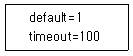
- 10초 동안 대기한 후에 메뉴 선택이 없으면 첫 번째 항목의 운영체제로 부팅한다.
- 100초 동안 대기한 후에 메뉴 선택이 없으면 첫 번째 항목의 운영체제로 부팅한다.
- 10초 동안 대기한 후에 메뉴 선택이 없으면 두 번째 항목의 운영체제로 부팅한다.
- 100초 동안 대기한 후에 메뉴 선택이 없으면 두 번째 항목의 운영체제로 부팅한다.
(정답률: 63%)
7. 다음 그림의 명령 결과에 대한 설명으로 알맞은 것은?
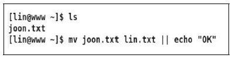
- mv 명령의 사용법 오류로 인해 오류 메시지가 나타난다.
- mv 명령의 사용법 오류로 인해 오류 메시지 및 OK가 화면에 출력된다.
- joon.txt는 lin.txt로 이름이 변경되고 화면에 아무것도 출력되지 않는다.
- joon.txt는 lin.txt로 이름이 변경되고 화면에 OK라고 출력된다.
(정답률: 56%)
8. 다음 중 X 클라이언트 프로그램을 X 서버로 전송하기 변경해야할 환경 변수로 알맞은 것은?
- TERM
- XTERM
- DISPLAY
- TERMINAL
(정답률: 61%)
9. 6개의 하드디스크로 RAID를 구성하려고 한다. 1개는 여분(spare) 디스크로 구성하고, 나머지 디스크로 RAID-5을 구성했을 경우에 실제 사용 가능한 디스크의 비율로 가장 알맞은 것은?
- 33.3%
- 50%
- 66.7%
- 83.3%
(정답률: 64%)
10. 다음 중 번호값이 가장 큰 시그널(signal)로 알맞은 것은?
- SIGTERM
- SIGINT
- SIGTSTP
- SIGQUIT
(정답률: 60%)
11. 다음 설명에 해당하는 용어로 알맞은 것은?
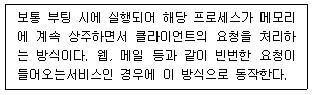
- exec
- inetd
- xinetd
- standalone
(정답률: 65%)
12. 다음 중 포어그라운드 프로세스를 백그라운드프로세스로 전환할 때 사용하는 키 조합으로 알맞은 것은?
- [Ctrl]+[c]
- [Ctrl]+[d]
- [Ctrl]+[z]
- [Ctrl]+[\]
(정답률: 69%)
13. 다음 중 장치 파일명의 종류가 나머지 셋과 다른 것은?
- IDE 디스크
- SCSI 디스크
- S-ATA 디스크
- SSD(Solid State Drive)
(정답률: 58%)
14. 다음 설명에 해당하는 용어로 알맞은 것은?
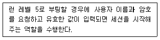
- 데스크톱 환경
- 윈도 매니저
- 디스플레이 매니저
- X 프로토콜
(정답률: 52%)
15. 다음 바로 직전에 수행한 명령을 재실행할 때 사용할 때 명령으로 알맞은 것은?
- !0
- !1
- !!
- history -1
(정답률: 63%)
16. 다음 설명에 해당하는 서브넷마스크값의 네트워크 접두어로 알맞은 것은?
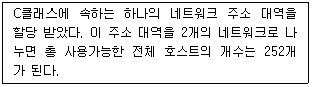
- /24
- /25
- /26
- /27
(정답률: 55%)
17. 다음 중 netstat 의 State 결과값이 ESTABLISHED 일 때 내용으로 알맞은 것은?
- 3 Way-Handshaking이 완료된 후 서버와 클라이언트가 서로 연결된 상태
- 서버에서 클라이언트로 들어오는 패킷을 위해 소켓을 열고 기다리는 상태
- 로컬 시스템의 클라이언트 애플리케이션이 원격 호스트에 연결을 요청한 상태
- 원격 호스트가 종료되고 소켓도 닫힌 상태에서 마지막 ACK패킷을 기다리는 상태
(정답률: 66%)
18. 다음 중 리눅스에서 지원하는 네트워크 하드웨어 장치명과 설명으로 알맞은 것은?
- lo : 로컬 루프백(Local Loopback)을 나타내는 장치로 물리적으로 존재하는 인터페이스
- enpx : CentOS 6 이전 버전에서 사용되었던 이더넷 카드 인터페이스 장치
- pppx : 패러럴 케이블을 사용하는 패러럴 라인 인터페이스 장치
- docker0 : 경량화된 서버 가상화 기술인 Docker를 사용할 경우 설정되는 네트워크 장치
(정답률: 51%)
19. 다음설명에해당하는OSI 7 계층으로가장알맞은것은?
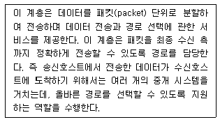
- 데이터링크 계층
- 네트워크 계층
- 전송 계층
- 세션 계층
(정답률: 60%)
20. 다음에서 설명하는 장치의 이름으로 가장 알맞은 것은?
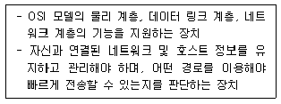
- Router
- Bridge
- Gateway
- Repeater
(정답률: 70%)
2과목: 리눅스 시스템 관리
21. 다음 중 1시간 주기로 실행되는 crontab 설정으로 알맞은 것은?
- 1 * * * * /etc/joon.sh
- * 1 * * * /etc/joon.sh
- * * 1 * * /etc/joon.sh
- * * * 1 * /etc/joon.sh
(정답률: 46%)
22. 다음 그림의 결과에서 lin 사용자가 /project 디렉터리에 파일을 생성했을 경우에 해당 파일의 그룹 소유권과 관련된 설명으로 알맞은 것은?
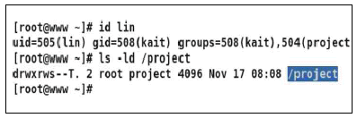
- 파일의 그룹 소유권은 아이디와 동일한 lin이 된다.
- 파일의 그룹 소유권은 주 그룹인 kait가 된다.
- 파일의 그룹 소유권은 2차 그룹인 project가 된다.
- lin 사용자는 주 그룹을 project로 전환해야만 접근이 가능하므로 파일을 생성할 수 없다.
(정답률: 56%)
23. 다음 그림에 해당하는 명령으로 알맞은 것은?
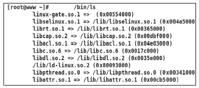
- ldd
- blkid
- ldconfig
- ld.so.conf
(정답률: 42%)
24. 다음 중 다수의 텍스트 파일이 10MB 정도로 묶여있는 tar 파일을 압축하려고 할 때 가장 압축률이 좋은 명령으로 알맞은 것은?
- xz
- gzip
- bzip2
- compress
(정답률: 57%)
25. rpm 파일을 설치하기 전에 어떠한 파일들이 설치 되는지 미리 확인해보려고 한다. 다음 ( 괄호 ) 안에 들어갈 내용으로 알맞은 것은?
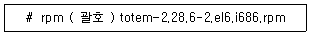
- -qlf
- -qlr
- -qlc
- -qlp
(정답률: 39%)
26. 다음에 제시된 프로세스의 우선순위를 높이려고 한다. ( 괄호 ) 안에 들어갈 내용으로 알맞은 것은?
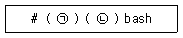
- ㉠ nice, ㉡ -10
- ㉠ nice, ㉡ --10
- ㉠ renice, ㉡ -10
- ㉠ renice, ㉡ --10
(정답률: 49%)
27. 다음 중 root 사용자가 lin 사용자의 예약된 cron 작업을 제거하는 명령으로 가장 알맞은 것은?
- crontab -d -u lin
- crontab -e -u lin
- crontab -r -u lin
- crontab -x –u lin
(정답률: 48%)
28. 사용자 디스크 용량을 제한하기 위해 쿼터를 설정하려고 한다. 다음 중 /etc/fstab에 설정해야하는 내용으로 알맞은 것은?
- 4번째 필드에 usrquota라는 옵션을 추가한다.
- 4번째 필드에 userquota라는 옵션을 추가한다.
- 5번째 필드에 usrquota라는 옵션을 추가한다.
- 5번째 필드에 userquota라는 옵션을 추가한다.
(정답률: 40%)
29. 다음 그림과 같이 파일 및 디렉터리가 생성된다. umask 명령을 실행했을 경우에 출력되는 값으로 알맞은 것은?
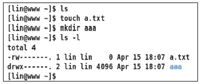
- 7000
- 0700
- 0007
- 0077
(정답률: 56%)
30. 다음 중 특정 사용자가 자신이 속한 주(Primary) 그룹을 다른 그룹으로 변경할 때 사용하는 명령으로 알맞은 것은?
- groupmod
- gpasswd
- newgrp
- groups
(정답률: 38%)
31. 다음 명령의 결과에 대한 설명으로 가장 알맞은 것은?
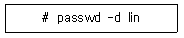
- lin 사용자는 패스워드 입력 없이 로그인이 가능하다.
- lin 사용자는 다음 로그인 시에 반드시 패스워드를 변경해야 한다.
- lin 사용자는 패스워드에 잠금이 설정되어서 일시적으로 로그인이 불가하다.
- lin 사용자는 패스워드가 삭제되어서 관리자가 패스워드를 설정할 때까지 로그인이 불가하다.
(정답률: 53%)
32. 다음 설명과 관련 있는 파일명으로 알맞은 것은?
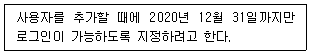
- /etc/skel
- /etc/passwd
- /etc/login.defs
- /etc/default/useradd
(정답률: 37%)
33. 다음 중 yum을 이용해서 telnet이라는 문자열이 들어있는 패키지를 검색하는 명령으로 알맞은 것은?
- yum -f telnet
- yum search telnet
- yum -search telnet
- yum --search telnet
(정답률: 62%)
34. 다음 중 시그널이름과 번호를 확인할 수 명령으로 알맞은 것은?
- kill -l
- killall -l
- pkill -l
- pgrep -l
(정답률: 51%)
35. 다음 중 백그라운드로 수행 중인 작업번호가 2인 프로세스를 포어그라운드로 전환하는 명령으로 알맞은 것은?
- fg -2
- fg &2
- fg %2
- fg -n 2
(정답률: 56%)
36. 다음 중 ihd라는 그룹명을 kait로 변경하는 명령으로 알맞은 것은?
- groupmod -n ihd kait
- groupmod -n kait ihd
- groupmod -N ihd kait
- groupmod -N kait ihd
(정답률: 51%)
37. 다음 그림에 해당하는 명령으로 알맞은 것은?
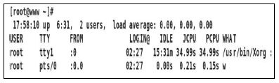
- w
- who
- users
- whoami
(정답률: 57%)
38. 다음 그림에 해당하는 명령어로 알맞은 것은?
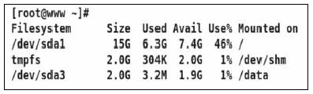
- du
- df
- quota
- repquota
(정답률: 58%)
39. 다음 중 10줄이 기록된 텍스트 파일인 lin.txt 파일에서 4번째부터 7번째 줄까지 출력하는 명령으로 알맞은 것은?
- head -7 lin.txt | tail -3
- head -7 lin.txt | tail -4
- tail -10 lin.txt | head -3
- tail -10 lin.txt | head –4
(정답률: 59%)
40. 다음 명령의 실행 결과에 대한 설명으로 알맞은 것은?
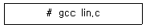
- lin.o라는 오브젝트 파일이 생성된다.
- lin이라는 오브젝트 파일이 생성된다.
- lin이라는 실행 파일이 생성된다.
- a.out라는 실행 파일이 생성된다.
(정답률: 44%)
41. 다음 중 커널 컴파일의 작업 내용과 명령어로 알맞은 것은?
- 커널 컴파일 옵션 설정 작업 : make mrproper
- 커널 소스의 설정 값 초기화 : make menuconfig
- 커널 모듈생성을위한 컴파일작업: make modules
- 커널 모듈 파일 복사 및 grub.conf 파일 수정 작업 : make modules_install
(정답률: 56%)
42. 특정 모듈을 제거하면서 의존성있는 모듈을 같이 제거하려고 할 때 ( 괄호 ) 안에 들어갈 옵션으로 알맞은 것은?
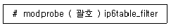
- -a
- -d
- -e
- -r
(정답률: 54%)
43. 새로운 디스크를 인식하려고 한다. 다음 중 디스크 인식 여부를 확인하는 명령으로 가장 알맞은 것은?
- mount
- fdisk -l
- cat /etc/fstab
- cat /etc/mtab
(정답률: 58%)
44. 다음 중 모듈에 대한 설명으로 틀린 것은?
- 모듈 관련 명령어로는 lsmod, insmod, rmmod가 있다.
- 모듈이 커널에 내장되는 방식을 모놀리식 방식이라고 한다.
- 리눅스 모듈의 경우 C컴파일러로 만들어진 ‘*.ko’ 파일 형태이다.
- 사용 가능한 모듈은 /lib/modules/커널버전 /kernel 디렉터리 안에서 확인 할 수 있다.
(정답률: 46%)
45. 다음 중 커널 컴파일을 하기 위한 과정으로 틀린 것은?(문제 오류로 가답안 발표시 1번으로 발표되었지만, 확정답안 발표시 1, 2번이 정답 처리 되었습니다. 여기서는 가답안인 1번을 누르면 정답 처리 됩니다.)
- 커널 컴파일 전, 후 총 2번의 리부팅이 필요하다.
- 리눅스 커널 버전의 소스를 /usr/src/kernels에 다운로드 하여야 한다.
- 어셈블러, GCC, make 유틸리티 등 개발 도구가 사전에 설치되어 있어야 한다.
- 커널 초기화 시 ‘make clean’ 명령을 이용하면 .config파일을 삭제 하지 않고 초기화 할 수 있다.
(정답률: 55%)
46. 새로운 디스크 추가 할당하고 리부팅을 하였으나 해당 디스크가 mount 되어 있지 않았다. 다음 중 리부팅 후에도 자동으로 mount되도록 설정하는 파일로 알맞은 것은?
- /etc/fstab
- /etc/groups
- /etc/exports
- /proc/partitions
(정답률: 64%)
47. 다음 중 프린트 작업의 ‘Request-ID’를 확인 하는 명령어로 알맞은 것은?
- lp
- lpc
- lpstat
- cancel
(정답률: 56%)
48. 다음 중 자동 문서 공급 장치가 장착된 스캐너에서 스캔할 때 사용 하는 명령으로 알맞은 것은?
- xcam
- scanadf
- scanimage
- sane-find-scanner
(정답률: 49%)
49. 다음 중 CUPS 프린팅 시스템의 특징으로 알맞은 것은?
- 설정 정보는 /etc/printcap파일에 저장된다.
- BSD계열 유닉스에서 사용하기 위해 개발되었다.
- 로컬에 직접 연결한 프린터를 네트워크 프린터처럼 설정이 가능하다.
- 초기에는 printconf, printtool과 같은 도구를 사용하여 설정을 하였다.
(정답률: 42%)
50. 다음 중 uname 명령을 이용하여 커널 버전을 확인하는 옵션으로 알맞은 것은?
- -n
- -o
- -r
- -s
(정답률: 44%)
51. 다음 설명에 해당하는 백업 도구의 옵션과 의미로 틀린 것은?
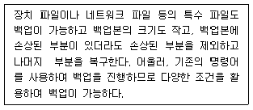
- -t : 내용만 확인할 때 사용한다.(--list)
- -b : 증분 백업으로 백업할 때 사용한다. (--incremental)
- -d : 필요한 경우 디렉터리를 생성한다. (--make-directories)
- -i : 표준입력으로 백업한 자료를 불러올 때 사용한다.(--extract)
(정답률: 46%)
52. 다음 설명과 관련된 파일시스템 보안에 관한 내용으로 알맞은 것은?
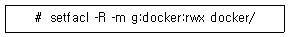
- ext2부터 지원하는 시스템으로 파일권한 외 13가지 속성을 제어한다.
- 파일이나 디렉터리에 접근 권한을 제어할 수 있도록 만든 시스템이다.
- 설명은 docker 디렉터리에 대한 접근 권한 리스트를 확인하는 명령이다.
- 사용자를 인증하고 그 사용자의 서비스에 대한 접근을 제어하는 모듈화된 방법이다.
(정답률: 37%)
53. 다음 중 리눅스 주요 보안 도구와 기능 설명에 대해 알맞은 것은?
- nmap : 모든 파일들에 대한 데이터베이스를 만들어 파일의 변조 여부를 검사한다.
- nessus : 운영 중인 서버에 불필요하게 작동하고 있는 서비스 포트를 확인할 수 있다.
- tripwire : 서버의 보안 취약점을 검사해주는 도구로 문제가 되는 서비스에 대한 정보를 알려준다.
- tcpdump : 조건식을설정하여네트워크인터페이스를 거치는 패킷 헤더 정보를 출력할 수 있다.
(정답률: 43%)
54. 다음 중 SSH(Secure Shell)의 설명으로 틀린 것은?
- 패킷을 암호화하여 telnet이나 rlogin에 비해 안전하다.
- ssh-keygen을 이용하면 인증키를 이용한 접속이 가능하다.
- 기본 설정 포트는 22번이며 원격 셸, scp, sftp기능을 지원한다.
- ssh2는 ssh1을 개선한 것으로 하위호환성을 완벽하게 지원한다.
(정답률: 62%)
55. 다음은 /var/log/xferlog 파일의 구성에 관한 설명이다.( 괄호 ) 안에 들어갈 내용으로 알맞은 것은?
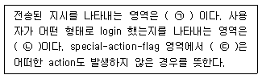
- ㉠ direction, ㉡ access-mode, ㉢ _
- ㉠ direction, ㉡ completion-status, ㉢ !
- ㉠ transfer-type, ㉡ access-mode, ㉢ !
- ㉠ transfer-type, ㉡ completion-status, ㉢ _
(정답률: 42%)
56. 다음 설명에 해당하는 로그 관련 주요 파일로 알맞은 것은?
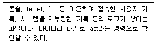
- /var/log/btmp
- /var/log/wtmp
- /var/log/lastlog
- /var/log/messages
(정답률: 43%)
57. 다음 중 sudo에 관련된 설명으로 틀린 것은?
- 특정 사용자 또는 특정 그룹에 root 사용자 권한을 가질 수 있게 하는 도구이다.
- visudo는 환경설정파일을 편집할 때 사용하는 명령이다.
- 적용된 사용자는 ‘sudo 명령어’ 형태로 실행하며 root 권한을 대행한다.
- 환경설정파일은 /etc/sudo 이다.
(정답률: 56%)
58. 다음 중 dmesg 명령에 관한 설명으로 알맞은 것은?
- 커널 변수의 값을 제어하여 시스템을 최적화 할 수 있는 명령이다.
- 커널링버퍼(kernel ring buffer)의 내용을 출력하고 제어하는 명령이다.
- /var/log/dmesg 파일에 기록된 환경 변수 설정 값을 출력하는 명령이다.
- 커널 부트 메시지 로그를 보여주는 명령으로 실행 시 /var/log/dmesg 에 기록된다.
(정답률: 30%)
59. 다음 설명에 해당하는 명령으로 가장 알맞은 것은?
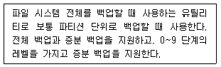
- dd
- cpio
- dump
- rsync
(정답률: 45%)
60. 다음 중 rsync 명령에 관한 설명으로 틀린 것은?
- rcp(remote copy)에 비해 처리속도가 빠르다.
- 내부 파이프라인을 통하여 전송기간을 줄인다.
- ssh을 이용하여 전송 가능하나 root 권한이 필요하다.
- 링크된 파일도 복사 가능하고 소유권도 유지하여 복사할 수 있다.
(정답률: 49%)
3과목: 네트워크 및 서비스의 활용
61. 다음은 MySQL 5.7.28 버전을 설치한 후에 mysql에서 사용하는 기본 데이터베이스를 생성하는 과정이다. ( 괄호 ) 안에 들어갈 내용을 알맞은 것은?
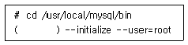
- ./mysql
- ./mysqld
- ./mysqld_safe
- ./safe_mysqld
(정답률: 48%)
62. 다음 설명과 같을 때 메인보드의 BIOS에서 활성화 여부를 확인해야 하는 항목으로 알맞은 것은?
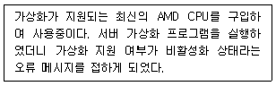
- VT-x
- SVM
- VDI
- VMX
(정답률: 31%)
63. 다음 ( 괄호 ) 안에 들어갈 수 있는 설정 내용으로 틀린 것은?
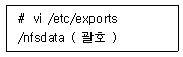
- *.ihd.or.kr
- 192.168.12.
- 192.168.12.0/255.255.255.0
- 192.168.5.0/24
(정답률: 42%)
64. 다음은 /etc/named.conf 파일 설정의 일부이다. ( 괄호 ) 안에 들어갈 내용으로 알맞은 것은?
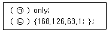
- ㉠ forwarders, ㉡ allow-query
- ㉠ forwarders, ㉡ forward
- ㉠ forward, ㉡ forwarders
- ㉠ allow-query, ㉡ forward
(정답률: 48%)
65. 다음 설명에 웹 서버 프로그램으로 알맞은 것은?
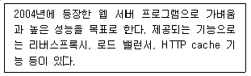
- Nginx
- Apache HTTP Server
- GWS(Google Web Server)
- IIS(Internet Information Server)
(정답률: 45%)
66. 다음은 httpd.conf 파일의 문법적 오류를 명령어를 사용해서 점검하는 과정이다. ( 괄호 ) 안에 들어갈 내용으로 알맞은 것은?
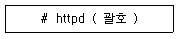
- -t
- -f
- -S
- -l
(정답률: 45%)
67. 다음 중 LDAP에 대한 설명으로 틀린 것은?
- X.500 Directory Access Protocol 기반으로 만들어진 통신 규약이다.
- RDBMS에 비교해서 검색 속도가 빠르다.
- 자주 변경되는 정보인 경우에 RDBMS보다 더욱 뛰어난 성능을 발휘한다.
- 읽기 위주의 검색 서비스에서 상당히 좋은 성능을 발휘한다.
(정답률: 47%)
68. 다음 설명과 같은 경우에 구성해야할 서버로 가장 알맞은 것은?
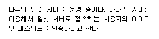
- SSH
- NFS
- NIS
- II
(정답률: 52%)
69. 다음은 NIS 서버에서 사용자관련 정보가 저장 되는 파일명으로 알맞은 것은?
- uid.byname
- user.byname
- hosts.byname
- passwd.byname
(정답률: 46%)
70. NFS 서버의 IP 주소가 192.168.5.13이고 공유된 디렉터리가 /data일 때 NFS 클라이언트에서 마운트하는 과정이다. 다음 ( 괄호 ) 안에 들어갈 내용으로 알맞은 것은?
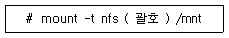
- /192.168.5.13/data
- //192.168.5.13/data
- 192.168.5.13:/data
- ⑊192.168.5.13:/data
(정답률: 46%)
71. 다음 중 메일 관련 프로그램의 종류가 다른 것은?
- qmail
- postfix
- dovecot
- sendmail
(정답률: 53%)
72. 다음 설명과 관련 있는 설정 파일명으로 알맞은 것은?
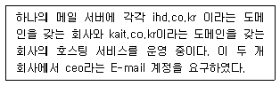
- /etc/aliases
- /etc/mail/local-host-names
- /etc/mail/virtusertable
- /etc/mail/sendmail.cf
(정답률: 39%)
73. 다음 설명과 관련 있는 설정 파일명으로 알맞은 것은?
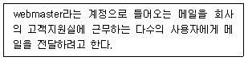
- /etc/aliases
- /etc/mail/local-host-names
- /etc/mail/virtusertable
- /etc/mail/sendmail.cf
(정답률: 39%)
74. 다음은 zone 파일에서 메일 서버를 설정하는 과정이다. 도메인이 ihd.or.kr이고, 관리자 계정이 kaituser일 때 ( 괄호 ) 안에 들어갈 내용으로 알맞은 것은?
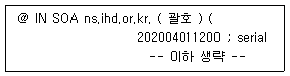
- kaituser@ihd.or.kr
- kaituser@ihd.or.kr.
- kaituser.ihd.or.kr
- kaituser.ihd.or.kr.
(정답률: 43%)
75. 다음 설명에 해당하는 가상화의 기능으로 알맞은 것은?
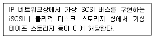
- 단일화(Aggregation)
- 에뮬레이션(Emulation)
- 절연(Insulation)
- 프로비저닝(Provisioning)
(정답률: 49%)
76. 다음 그림과 같은 방식의 가상화 기술로 알맞은 것은?
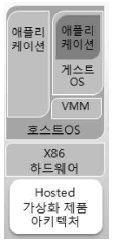
- VMware ESXi Server
- XenServer
- Docker
- VirtualBox
(정답률: 46%)
77. 다음 설명과 같은 경우에 도입해야할 가상화 기술로 알맞은 것은?
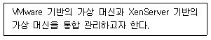
- VirtualBox
- RHEV
- Docker
- Openstack
(정답률: 40%)
78. 다음 중 xinetd 기반으로 동작하는 텔넷 서버를 활성화하기 위한 설정으로 알맞은 것은?
- disable = no
- disable = yes
- enable = no
- enable = yes
(정답률: 41%)
79. 다음 중 TCP wrapper를 이용한 접근 제어가 가능한 서비스로 틀린 것은?
- sshd
- vsftpd
- in.telnetd
- squid
(정답률: 41%)
80. 다음 설명과 같은 경우에 구성해야 할 서버로 알맞은 것은?
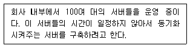
- VNC 서버
- NTP 서버
- Proxy 서버
- DHCP 서버
(정답률: 55%)
81. 다음 NTP 서버에서 계층을 나타내는 용어로 알맞은 것은?
- Layer
- Frame
- Class
- Stratum
(정답률: 51%)
82. 아파치 웹 서버 2.4 버전에서 서버의 포트 번호를 8080으로 운영하려고 한다. 다음 중 관련 설정으로 알맞은 것은?
- Port 8080
- Listen 8080
- http_port 8080
- http_listen 8080
(정답률: 49%)
83. 다음 중 이름과 성의 조합을 나타내는 LDAP의 속성 키워드로 알맞은 것은?
- ou
- cn
- sn
- dc
(정답률: 54%)
84. 다음은 NIS 클라이언트에서 NIS 서버 및 도메인명을 지정하는 과정이다. ( 괄호 ) 안에 들어갈 파일명으로 알맞은 것은?
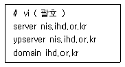
- /etc/hosts
- /etc/yp.conf
- /etc/ypbind.conf
- /etc/sysconfig/network
(정답률: 36%)
85. 다음 중 삼바 서버와 관련 있는 프로토콜의 조합으로 가장 알맞은 것은?
- SMB, CIFS
- RPC, SMB
- RPC, CIFS
- SMB, IPC
(정답률: 44%)
86. 다음은 중 삼바 서버의 환경 설정의 일부이다. ( 괄호 ) 안에 들어갈 내용으로 알맞은 것은?
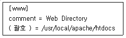
- directory
- public
- path
- root
(정답률: 46%)
87. 다음 중 vsftpd 설치 시에 제공되는 /etc/vsftpd/ftpusers 파일의 기능에 대한 설명으로 알맞은 것은?
- vsftpd 서버에 접근이 가능한 사용자 목록 파일이다.
- vsftpd 서버에 접근이 불가능한 사용자 목록 파일이다.
- vsftpd 서버에 접근이 가능한 호스트의 IP 주소 목록 파일이다.
- vsftpd 서버에 접근이 불가능한 호스트의 IP 주소 목록 파일이다.
(정답률: 43%)
88. 다음 중 메일 클라이언트가 메일 서버에 도착한 E-mail을 가져올 때 사용되는 프로토콜의 조합으로 알맞은 것은?
- SNMP, SMTP
- IMAP, SMTP
- SMTP, POP3
- IMAP, POP3
(정답률: 49%)
89. 다음 중 메일을 보낸 후에 외부로 메일이 전송되었는지 여부를 확인하는 명령으로 알맞은 것은?
- m4
- mailq
- mail -v
- sendmail -bi
(정답률: 44%)
90. 다음 중 DNS 서버가 등장하는데 계기가 된 파일로 알맞은 것은?
- /etc/hosts
- /etc/host.conf
- /etc/networks
- /etc/sysconfig/network
(정답률: 50%)
91. 다음은 /etc/named.conf 파일 설정의 일부로 Zone 파일이 위치하는 디렉터리를 지정하는 내용이다. 다음 ( 괄호 ) 안에 들어갈 내용으로 알맞은 것은?
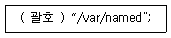
- zone
- path
- include
- directory
(정답률: 32%)
92. 다음 중 리버스 존(Reverse Zone) 파일에만 사용하는 레코드 타입으로 알맞은 것은?
- RX
- MX
- PTR
- CNAME
(정답률: 53%)
93. 다음 그림에 해당하는 프로그램을 실행하는 명령으로 알맞은 것은?
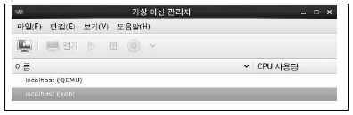
- virsh
- libvirtd
- virt-top
- virt-manager
(정답률: 55%)
94. 다음설명과같은경우에구성해야할서버로알맞은것은?
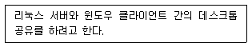
- VNC 서버
- NTP 서버
- Proxy 서버
- DHCP 서버
(정답률: 53%)
95. 다음은 httpd.conf 파일에서 웹 문서가 위치하는 디렉터리를 변경하는 과정이다. ( 괄호 ) 안에 들어갈 내용으로 알맞은 것은?
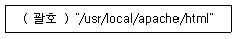
- ServerRoot
- ServerAdmin
- ServerName
- DocumentRoot
(정답률: 51%)
96. 다음과 같은 설정을 통해 ssh 침입을 시도하는 특정 호스트를 차단하려고 할 때 적용할 수 있는 파일로 알맞은 것은?
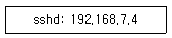
- /etc/hosts.deny
- /etc/ssh/sshd_config
- /etc/syscofing/iptlables
- /etc/syscofing/selinux
(정답률: 54%)
97. 다음 중 iptables에 구성되어 있는 각 테이블의 설명으로 알맞은 것은?
- filter : IP의 주소를 변환시키는 역할을 수행하는 테이블
- mangle : 패킷 필터링을 담당하는 iptables의 기본 테이블
- nat : 패킷 데이터를 변경하는 특수 규칙을 적용하는 테이블
- raw : 넷필터의 연결추적 하위 시스템과 독립적으로 동작해야 하는 규칙을 설정하는 테이블
(정답률: 47%)
98. 다음에서설명하는네트워크침해유형으로알맞은것은?
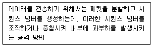
- Land Attack
- Smurf Attack
- Teardrop Attack
- TCP SYN Flooding
(정답률: 39%)
99. 다음 중 DDoS 공격 도구의 종류가 다른 것은?
- Boink
- Trinoo
- TFN 2K
- Stacheldraht
(정답률: 37%)
100. 다음 중 iptables 관련 로그가 기록되는 로그파일로 알맞은 것은?
- /var/dmesg
- /var/log/secure
- /cat/log/xferlog
- /var/log/messages
(정답률: 37%)